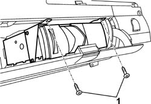
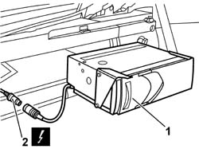

5570T85 CD/AUDIO PLAYER LOADER - R R
- Path
- Procedures > 55 ELECTRICAL EQUIPMENT > 5570 ACCESSORIES > 5570T CAR RADIO AND CAR TELEPHONE > 5570T85 CD/AUDIO PLAYER LOADER - R R
- Kind
- repair procedure (removal / refitting; the operation number is the code)
- Applies to
- all engines; all production periods
- Interactive page
- https://sloeber94.github.io/elrnDB-aGt/en/#/125001716
Applies to: all engines; all production periods
 Removing
Removing
 Refitting
RefittingDisconnect the negative battery terminal lead.
Open the tailgate.
Open the flap for the compartment on the left hand side of the luggage compartment.
1. Unscrew the audio CD player bolts.

Applies to: all engines; all production periods
1. Move the audio CD player slightly.
2. Disconnect the electrical connection and recover the audio CD player.

Applies to: all engines; all production periods
Refitting
RemovingCheck the audio CD player is not damaged.
Connect the electrical connection.
Fit the audio CD player, then secure with bolts.
Connect the battery negative terminal lead.
Check the operation of the audio CD player.
Close the flap for the compartment on the left hand side of the luggage compartment.
Topics that link to this page (16)
- N15 CD CHANGER NOT WORKING
- 5580PH CHECK OPERATION OF CD CHANGER MODULE AND RADIO MODULE
- 3340A35 LEFT REAR WHEEL RPM SENSOR - R R
- 3340A37 RIGHT REAR WHEEL RPM SENSOR - R R
- 3340A44 REAR WHEEL RPM SENSORS (TWO) R R
- 5010C60 LH OR RH REAR AIR OUTLET -ONE- R R
- 5505C82 WIRING incorporated in REAR BUMPER RR
- 5540A60 LEFT OUTSIDE REAR LIGHT CLUSTER - R.R.
- 5540E10 REAR FOG LAMP (ONE), LH OR RH - R+R
- 5550D24 REVERSING LIGHT - R+R
- 7040B06 SIDE TRIM (ONE) LH OR RH, LOAD COMPARTMENT/LOAD PLATFORM - R R
- 7040B35 One luggage compartment COMPARTMENT left or right RR
- 7050A45 STRIKER OF ONE SPLIT REAR SEAT SQUAB FASTENING RELEASE DEVICE ONE LH OR RH R R
- 7065B10 L/H OR R/H REAR SAFETY BELT (ONE) - R+R
- 7065B40 BRACKET FOR REAR SEAT BELT WHEEL (ONE) LH OR RH - R R
- 7210E66 REAR BUMPER